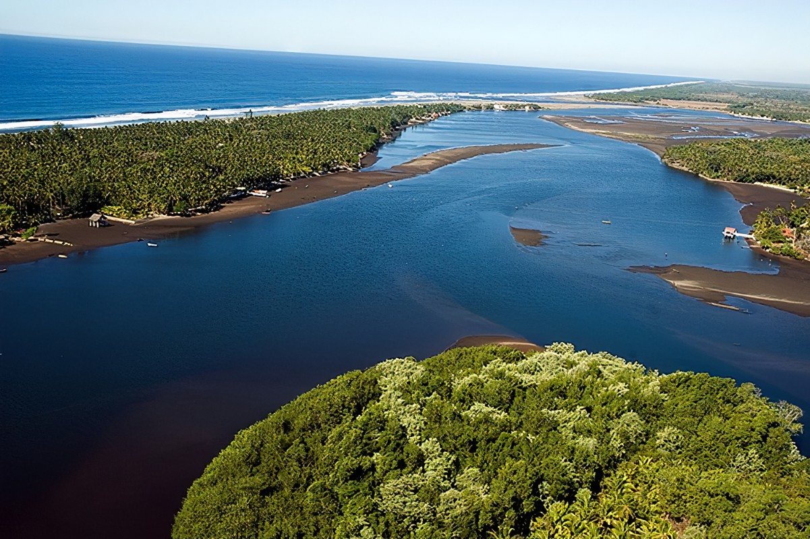
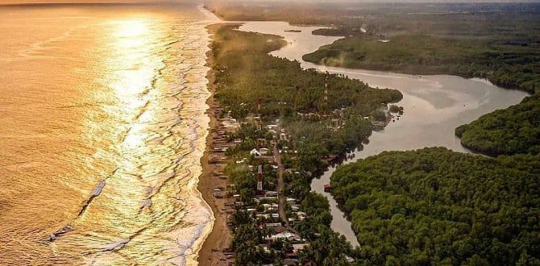

BARRA DE SANTIAGO
|  |
La Barra de Santiago o "la Barra" como le suelen decir los lugareños, no es solo una playa conocida como playa Barra de Santiago, es mas que eso, también un cantón y un área importante natural con variedad de plantas y animales incluidas las nutrias, ese animal prácticamente desconocido por la mayoría de salvadoreños. Sin mencionar los cocodrilos y también los manglares, esos árboles tan importantes en el ecosistema costero. En esta página te contamos sobre la playa Barra de Santiago pero no solo eso, también veremos como llegar, que hay en Barra de Santiago, algunas especies de plantas y animales de la zona, y mas información que de seguro te interesará.Este lugar se caracteriza por la increíble flora y fauna que posee, y por su preciosos paisajes. |
La Barra de Santiago es parte del Área de Conservación El Imposible-Barra de Santiago, el cual está conformado por el Bosque El Imposible que se encuentra mas adentro en tierra y por la Barra. Además, en si la Barra es un área protegida conocida como Área Natural Protegida y Sitio Ramsar Complejo Barra de Santiago, un área de 2,168 hectáteas de extensión. En kilómetros cuadrados equivalen a 21.68 kilómetros cuadrados.
Fauna
La variedad de animales en la Barra de Santiago es acuática o semi acuática, entre ellos se pueden encontrar cocodrilos, caimanes, nutrias, punches, curiles, conchas, cangrejos azules, camarones. Tortugas Carey del Pacífico Oriental que llegan a anidar a la playa Barra de Santiago, Loras Nuca Amarilla, entre otros animales. En cuanto a aves, es una zona de aves migratorias como lo es el martín pescador (Alcedo atthis), la garza azul (Florida caerulea), el pelícano (Pelecanus occidentalis) y la garza blanca (Egretta alba). Aunque también se pueden encontrar aves locales.
|
Los cocodrilos en la Barra de Santiago aunque no son cientos, los hay, especialmente uno llamado "el niño" que es el cocodrilo mas grande de "la barra" el cual tiene 4 metros de largo y que se encuentra en el canal El Zapatero. El tipo de cocodrilo que hay en la Barra de Santigo es el conocido como "cocodrilo americano", un cocodrilo de río y puede llegar a medir 6.1 metros. |
 |
En el caso de los cocodrilos en la Barra de Santiago, el mas grande es "el niño" y el resto de cocodrilos son de diferentes tamaños.